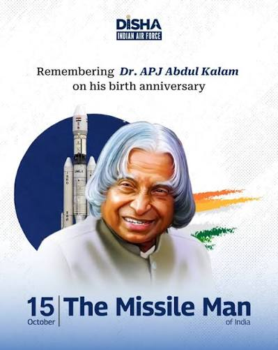

Dr. A.P.J. Abdul Kalam
About Dr. A.P.J. Abdul Kalam
Dr. Avul Pakir Jainulabdeen Abdul Kalam was an Indian aerospace scientist and statesman who served as the 11th President of India from 2002 to 2007.
He played an important role in India's space and missile development programs. He became widely known as the "Missile Man of India" because of his contribution to India's missile technology.
Early Life
Abdul Kalam was born on 15 October 1931 in Rameswaram, Tamil Nadu. He came from a humble background and worked hard throughout his life to achieve his dreams.
From an early age, he had a strong interest in science, mathematics and learning.
Education
Abdul Kalam studied physics at Saint Joseph's College in Tiruchirappalli and later studied aerospace engineering at the Madras Institute of Technology.
His education helped him build a successful career in aerospace science and technology.
Major Achievements
- Worked with India's space and missile development programs.
- Played an important role in India's missile development.
- Served as the 11th President of India.
- Inspired millions of students through his speeches and books.
- Promoted education, science and technological development.
Major Awards
Bharat Ratna
India's highest civilian award.
Padma Vibhushan
One of India's highest civilian honours.
Padma Bhushan
One of India's prestigious civilian awards.
Inspirational Quote
"Dream, dream, dream. Dreams transform into thoughts and thoughts result in action."
Legacy
Dr. A.P.J. Abdul Kalam continues to inspire students and young people across India. His life demonstrates the importance of hard work, education, determination and dreaming big.
He is remembered not only as a scientist and President but also as a teacher and mentor who encouraged young people to contribute to India's development.